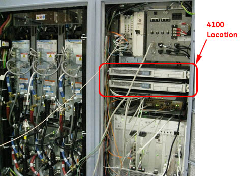
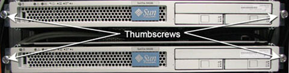

GE Exclusive Use Only
Direction 5670006, Rev# 1
Discovery MR750w GEM Service Methods
Module Version 7.0, Version Date 4/13/11
GE Exclusive Use Only |
| Required Persons | Preliminary Reqs | Procedure | Finalization |
|---|---|---|---|
| 2 | 10 mins | 60 mins per ICN | 30 mins |
| Item | Qty | Effectivity | Part# | Manufacturer | |
|---|---|---|---|---|---|
| Image Compute Node (ICN) - Sun 4100 | 1 for 16-channel systems; 2 for 32-channel systems | replacing ICN 4170 with ICN 4100 | Refer to FRU Manual | - | |
| Image Compute Node (ICN) - Sun 4170 | 1 for either 16-channel or 32-channel systems | replacing ICN 4100 with ICN 4170 | M7000JW | - | |
| Software Collector (22.x) | 1 | replacing ICN 4100 with ICN 4170 | Refer to FRU Manual | - | |
| ||||
| Electrocution Hazard! | ||||
| Dangerous voltages are present throughout the System Cabinet when Power is applied. | ||||
| Refer To OSHA Lockout Tagout Requirements. |
| ||||
| Possible personal injury! | ||||
| ICN modules weigh approximately 40 lbs. and require two people to lift them. | ||||
| ||||
| Follow the procedure mentioned below for removing power to ICN chassis. Failure to properly power down ICN’s may result in premature ICN failure. | ||||
| ||||
| Under NO circumstances should the ICN's be turned ON/OFF from the power button on the front. The ICN's have software running on disk drives that may become corrupted if not shut down properly. | ||||
Locate the ICN 4170 in the Power Gradient RF (PGR) system cabinet (see Illustration 1).
Illustration 1: ICN Location - 4170

| NOTE: | To open the PGR Cabinet, turn the key to the right. The cabinet handle will pop out. Turn the handle bar to the left and the cabinet door opens. |
Power down the host.
Perform LOTO for Reconstruction Equipment.
Loosen the thumbscrews on each side of the ICN (see Illustration 2).
Illustration 2: ICN 4170 Thumbscrews

Slide out the ICN until the stop is reached at the end of the side rails.
Remove all the connections at the back of the ICN.
Illustration 3: Fiber Optic and Ethernet Switch Connections

| ||||
| Possible personal injury! | ||||
| The 4170 ICN weighs approximately 40 lbs. and requires two people to lift it. | ||||
Locate the two release tabs on the slide rails (see Illustration 4). Press both release tabs toward the center of the ICN while pulling the ICN forward until the rails release and the ICN is free. Place the ICN to the side in a safe area.
Illustration 4: ICN Slide Rails and Release Tabs

Loosen the network switch and slide it down to access mounting screws.
Illustration 5: Location of Mounting Screws

Locate and remove the four mounting screws for each side-mount bracket (see Illustration 6).
Illustration 6: Side-Mount Bracket Fasteners

Attach slide rails to mounting brackets using 3 screws each.
Locate placement for mounting bracket in the cabinet. Mount brackets for installation of ICN 4100 units (see Illustration 7). Make sure to orient the brackets with the slot on the bottom (see Illustration 8).
Illustration 7: ICN 4100 Side Mounting Brackets

Illustration 8: Mounting Brackets - Correct Orientation

Attach trays to mounting brackets as shown below.
Illustration 9: Tray - Correct Orientation

| ||||
| Possible personal injury! | ||||
| The 4100 ICN weighs approximately 40 lbs. and requires two people to lift it. | ||||
Insert ICN 4100 units into the PGR cabinet. Slide the ICNs out until the stop is reached at the end of the slide rails. Make sure the release tabs engage and the ICNs are locked into the rails.
Connect all cables listed in Table 1. Illustration 10 shows the orientation of cables when looking at the rear of the ICN. Green indicates ports that should have cable inputs; red indicates ports that should NOT have cable inputs.
| NOTE: | Ethernet connection should go to Net MGT, Eth 2, Eth 3 ports. |
Table 1: ICN 4100 Wiring Matrix for Infiniband
| Connec tion Item | ICN 4170 | ICN 4100 | ||
| 32-Channel | 16-Channel | 32-Channel | 16-Channel | |
| Power Cords | 2 | 2 | 4 | 2 |
| Ethernet | 3 | 3 | 6 | 3 |
| Duplex - Fiber Optic | 2 | 1 | 2 | 1 |
| Single Fiber Optic | 2 | 1 | 2 | 1 |
| Infiniband - Jumper | N/A | N/A | 1 | N/A |
| Fiber Optic - Jumper | N/A | N/A | 1 | N/A |
Illustration 10: Cable - Correct Orientation
Illustration 11: Ethernet and Fiber Optic Connections

Press the release tabs and push the ICNs into the PGR cabinet until the ICNs are completely inside.
Tighten the thumbscrews on the front of the ICNs to secure.
Power on the host.
| NOTE: | For the first 3 or 4 minutes, LED's come on only at the rear of the ICN, next to the power cables. After 3-4 minutes, you will hear the ICN fans come on and then the LED at the front of the ICN starts flashing. |
Upon boot up, log in at root and invoke Guided Install.
Configure the new ICN (see VRE Reconfiguration).
Locate the ICN 4100 in the Power Gradient RF (PGR) system cabinet (see Illustration 12).
Illustration 12: ICN Location - 4100

| NOTE: | To open the PGR Cabinet, turn the key to the right. The cabinet handle will pop out. Turn the handle bar to the left and the cabinet door opens. |
Power down the host.
Perform LOTO for Reconstruction Equipment.
Loosen the thumbscrews on each side of the ICN(s). (See Illustration 13.)
Illustration 13: ICN 4100 Thumbscrews

Slide out the ICN(s) until the stop is reached at the end of the side rails.
Remove all the connections at the back of the ICN(s).
Illustration 14: ICN 4100 Cable Connections

| ||||
| Possible personal injury! | ||||
| The 4100 ICN weighs approximately 40 lbs. and requires two people to lift it. | ||||
Locate the two release tabs on the slide rails (see Illustration 15). Press both release tabs toward the center of the ICN while pulling the ICN forward until the rails release and the ICN is free. Place the ICN to the side in a safe area.
| NOTE: | ICNs should be returned through the SWAP process. If only one ICN has failed in a 32-channel system, return both 4100 ICNs to replenish FRU stock. |
Illustration 15: ICN Slide Rails and Release Tabs
Remove the ICN trays from the ICN mounting brackets.
Illustration 16: ICN 4100 Trays
Remove the three screws securing each mounting bracket for the ICN.
Illustration 17: ICN 4100 Side Mounting Brackets
Loosen the mounting screws for the network switch and slide the switch down to give access to the mounting location for the slide rails for the ICN 4170.
Illustration 18: Network Switch Mounting Screws
Attach the slide rails for the ICN 4170 module to the mounting rails in the PGR cabinet using four screws each.
Illustration 19: Mounting Rails for ICN 4170
| ||||
| Possible personal injury! | ||||
| The 4170 ICN weighs approximately 40 lbs. and requires two people to lift it. | ||||
Insert the ICN 4170 unit into the PGR cabinet. Slide the ICNs out until the stop is reached at the end of the slide rails. Make sure the release tabs engage and the ICNs are locked into the rails.
Connect all cables listed in Table 2. Illustration 20 shows the orientation of cables when looking at the rear of the ICN. Green indicates ports that should have cable inputs; red indicates ports that should NOT have cable inputs.
| NOTE: | Ethernet connection should go to Net MGT, Eth 2, Eth 3 ports. |
Table 2: ICN Wiring Matrix for Infiniband
| Connec tion Item | ICN 4170 | ICN 4100 | ||
| 32-Channel | 16-Channel | 32-Channel | 16-Channel | |
| Power Cords | 2 | 2 | 4 | 2 |
| Ethernet | 3 | 3 | 6 | 3 |
| Duplex - Fiber Optic | 2 | 1 | 2 | 1 |
| Single Fiber Optic | 2 | 1 | 2 | 1 |
| Infiniband - Jumper | N/A | N/A | 1 | N/A |
| Fiber Optic - Jumper | N/A | N/A | 1 | N/A |
Illustration 20: Cable - Correct Orientation
Press the rail release tabs and push the ICN module into the PGR cabinet until the ICN is completely inside.
Tighten the thumbscrews on the front of the ICN to secure it to the cabinet mounting rails.
Move the network switch back into its position and secure it with its mounting screws.
Power on the host.
| NOTE: | For the first 3 or 4 minutes, LED's come on only at the rear of the ICN, next to the power cables. After 3-4 minutes, you will hear the ICN fans come on and then the LED at the front of the ICN starts flashing. |
Upon boot up, log in at root and invoke Guided Install.
Configure the new ICN (see VRE Reconfiguration.
Perform Loading Host System Software.
| NOTE: | This upgrade requires at minimum 22.x software to be loaded.
Make sure to obtain the latest version of the software. Sites installing 22.x for first time must download any new option keys from the eLicense web site in order to ensure access to all system tools. |
Perform a test scan to ensure the system is working properly.
Provide the customer with the operator’s manual delivered with the FRU kit.
Return old ICN(s) through the SWAP process.